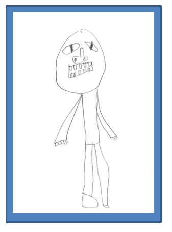
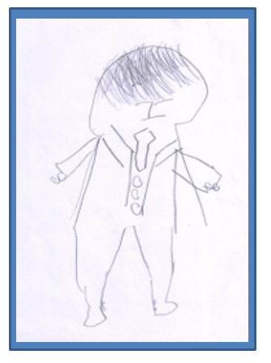

경계선 지능 및 발달지연 선별 과정에서 아동의 개별적인 특성을 존중하고, 객관적이고 공정한 평가를 제공해야 하며, 신뢰와 협력을 형성하는 것이 중요하다. 선별 과정에서 윤리적 책임과 전문성을 강화하기 위한 다양한 방안을 논의하고, 아동 및 보호자와의 신뢰 형성 방안은 다음과 같다.

1. 선별 과정의 투명성과 공정성 유지
선별 과정에서 가장 중요한 것은 투명성과 공정성을 유지하는 것이다. 아동의 발달 상태를 평가할 때, 객관적이고 과학적으로 입증된 평가 도구를 사용하여 개인적인 편견이나 주관적인 판단이 개입하지 않도록 해야 한다(김정우, 2020). 선별 과정에서 얻어진 모든 정보는 객관적으로 기록되며, 아동의 발달 상태를 정확하게 반영하는 데이터에 근거하여 지원 계획을 수립해야 한다. 상담사는 아동과 보호자에게 신뢰를 줄 수 있으며, 선별 과정에서 발생할 수 있는 오해를 방지할 수 있다.
2. 개인정보 보호 및 비밀 유지
아동과 보호자의 개인정보 보호는 상담사의 기본 윤리적 책임 중 하나이다. 상담 과정에서 수집된 정보는 허가된 사람 이외에는 공유되지 않으며, 비밀유지 원칙을 철저히 준수해야 한다(박지훈, 2020). 이러한 비밀 유지가 이뤄져야만 보호자와 아동이 신뢰를 갖고 상담 과정에 참여할 수 있다. 비밀보장의 의무는 상담사의 윤리적 책임이며, 신뢰 형성의 기초가 된다. 이 과정에서 정보 유출이나 개인정보 침해가 발생하지 않도록 주의해야 한다.
3. 정확하고 객관적인 진단 제공
발달지연 및 경계선 지능 아동을 선별할 때는 정확한 진단이 필수적이다. 상담사는 아동의 상태를 추측하거나 과장하지 않고, 객관적인 평가 도구와 결과를 바탕으로 진단을 내려야 한다. 평가 결과를 보호자에게 설명할 때도 객관적인 데이터를 기반으로 한 명확한 정보를 제공하여, 보호자가 아동의 상태를 이해하고 적절한 결정을 내릴 수 있도록 돕는다(이소영, 2020). 진단 과정에서 정확성이 보장되지 않으면, 아동에게 적절한 지원을 제공하는 데 한계가 생길 수 있다.

4. 다학제적 팀과의 협력
아동의 발달 상태를 정확하게 진단하고 적절한 개입 계획을 수립하기 위해서는 다학제적 팀과의 협력이 필수적이다. 상담사, 심리학자, 특수교육 전문가, 의사 등 다양한 전문가들이 협력하여 아동에게 가장 적합한 지원 계획을 마련해야 한다(이하영, 2022). 각 분야의 전문가들이 가진 지식과 경험을 통합함으로써 아동에게 보다 종합적이고 효과적인 지원을 제공할 수 있으며, 상담사의 전문성도 강화된다. 이러한 협력은 아동의 발달적 요구를 충족시키는 데 큰 도움을 준다.
5. 평가 과정에서 아동 존중
선별 과정에서 아동의 개별적인 특성과 존엄성을 존중하는 것은 상담사의 중요한 윤리적 책임 중 하나이다. 아동을 단순히 평가의 대상으로 보지 않고, 그들의 감정과 생각을 존중하며, 자율적으로 자신의 감정을 표현할 수 있도록 기회를 제공한다. 아동은 스스로의 의견을 내고, 상담 과정에 적극적으로 참여할 수 있는 주체로서 대우받아야 한다(최유미, 2019). 아동은 상담 과정에 신뢰를 갖고, 자신의 발달적 요구를 더 잘 이해하게 된다.
6. 선별 결과에 따른 맞춤형 개입 계획 수립
선별 과정이 끝난 후에는 아동의 발달적 요구에 맞는 맞춤형 개입 계획을 수립해야 한다. 이를 위해 보호자와 협력하여, 개별화된 교육 계획(IEP)을 수립하며 아동의 강점과 약점을 고려한 구체적인 목표를 설정한다(김수진, 2021). 맞춤형 계획은 아동이 장기적으로 발전할 수 있도록 단계별로 설정되어야 하며, 학습과 사회적 적응, 정서적 지원 등 다양한 측면에서 포괄적인 개입을 제공해야 한다.
7. 지속적인 전문성 개발
상담사는 지속적으로 전문성을 개발하여 최신 상담 기법과 연구를 숙지하고, 선별 및 개입 과정에서 적용해야 한다. 정기적인 교육과 훈련을 통해 최신 정보를 습득하고, 새로운 연구 결과를 상담 실무에 적용함으로써 아동에게 더 나은 지원을 제공할 수 있다(박정아, 2021). 상담사의 전문성은 선별 과정에서의 정확성과 효과적인 개입을 보장하는 중요한 요소이며, 윤리적 책임을 다할 수 있다.
8. 보호자와의 신뢰 관계 형성
보호자와의 신뢰 관계는 선별 과정에서 매우 중요하다. 상담사는 보호자와의 소통을 강화하고, 보호자가 선별 과정과 개입 계획에 대해 명확히 이해할 수 있도록 투명한 정보를 제공해야 한다(정명훈, 2021). 보호자가 상담사와 신뢰를 쌓으면, 아동에게 적절한 지원이 제공되는 과정에 더욱 적극적으로 참여할 수 있다. 또한 상담사는 보호자의 의견을 경청하고, 그들의 역할을 존중함으로써 상호 신뢰를 강화한다.
9. 명확한 설명과 의사결정 참여
보호자에게 선별 과정과 결과를 명확하게 설명하고, 아동에게 제공되는 개입 프로그램에 대한 선택권과 참여 기회를 제공해야 한다. 보호자는 모든 의사결정 과정에서 중요한 역할을 하며, 적극적으로 의견을 낼 수 있도록 상담사가 지원해야 한다(이영민, 2022). 보호자는 아동의 개입 프로그램에 대한 이해도를 높이고, 결정 과정에 주체적으로 참여하게 된다.
10. 아동의 권리 보호
아동의 권리를 보호하는 것은 상담사의 중요한 책임이다. 아동은 차별받지 않고, 정당한 대우를 받을 권리가 있다. 상담사는 윤리적 기준을 엄격히 준수하며, 아동의 학습 환경과 지원이 지속적으로 개선될 수 있도록 최선을 다해야 한다(윤경미, 2019). 아동은 학업과 정서적 발달을 동시에 지원받을 수 있으며, 적절한 교육적 환경에서 성장할 수 있게 된다.
결 론
경계선 지능 및 발달지연 아동들의 조기 발견과 선별은 그들의 학업, 사회적 적응, 정서적 안정에 있어서 매우 중요한 역할을 한다. 경계선 지능은 IQ 70~85 사이에 해당하는 상태로, 발달장애로 진단되지 않지만 학습 속도가 느리고 복잡한 문제 해결에 어려움을 겪는다. 발달지연은 특정 발달 영역에서 또래보다 뒤처지는 상태를 의미하며, 인지, 언어, 사회적, 신체적 발달에서 다양한 어려움을 겪게 된다. 이들은 일상생활과 학업에서 지속적인 어려움을 경험할 수 있으며, 적절한 조기 개입이 이루어지지 않으면 장기적인 부정적 결과를 초래할 수 있다(김정우, 2020). 경계선 지능 및 발달지연 아동들은 학습 속도 저하, 사회적 규칙 이해 부족, 문제 해결 능력 부족 등의 증상을 보이며, 정서적 좌절감, 낮은 자존감, 불안 및 우울과 같은 정서적 문제를 경험할 가능성도 크다. 이러한 특성들은 아동들이 학업 성취에서 어려움을 겪게 만들고, 사회적 상호작용에서도 문제를 일으킨다. 따라서 경계선 지능 및 발달지연 아동을 조기에 발견하고 선별하는 것이 그들의 학업 성취도와 사회적 적응력을 향상시키는 데 필수적이다.
경계선 및 발달지연 아동들을 효과적으로 선별하기 위해서는 표준화된 학력 평가 도구를 사용한 학업 성취도 평가, 사회적 상호작용과 정서적 상태에 대한 종합적인 평가가 필요하다. 학업 성취도를 통해 아동이 겪고 있는 학습의 어려움을 파악하고, 사회적 상태 평가를 통해 아동의 대인관계 능력을 점검할 수 있다. 또한, 정서적 상태 평가를 통해 정서적 문제를 조기에 발견하고 적절한 정서적 지원을 제공하는 것이 중요하다(이하영, 2022). 학교, 가정, 지역사회 간의 협력이 이러한 선별 과정에서 중요한 역할을 하며, 보호자와 교사의 피드백도 선별 과정에서 큰 도움이 된다. 그러나 경계선 및 발달지연 아동에 대한 조기 발견과 선별은 여전히 많은 과제를 안고 있다.
교육 현장에서 이러한 아동들을 충분히 선별하기 위한 체계적인 시스템이 부족하며, 교사와 상담사들의 인식 부족도 선별 과정에서의 중요한 문제점으로 작용하고 있다(이소영, 2020). 또한, 선별된 아동들에게 적절한 지원을 제공하는 데 있어 자원의 부족과 교육적 접근 방법의 제한성도 중요한 문제로 지적된다. 따라서 이러한 아동들에게 적합한 지원을 제공하기 위한 지속적인 전문성 개발과 다각적인 지원 체계 구축이 필요하다.
결론적으로, 경계선 및 발달지연 아동들의 조기 발견과 선별은 그들의 학습, 사회적 적응, 정서적 안정성에 매우 중요한 영향을 미친다. 적절한 조기 개입을 통해 학습에서의 성취감을 경험하고, 사회적 관계에서 자신감을 키울 수 있도록 돕는 것이 필요하다. 이를 위해 학교, 가정, 지역사회 간의 협력적인 네트워크 구축이 필수적이며, 경계선 및 발달지연 아동들이 보다 나은 학습 환경과 지원을 받을 수 있도록 해야 한다(정명훈, 2021). 지속적인 연구와 교육적 노력이 이러한 아동들의 미래에 긍정적인 변화를 가져올 것이다.
2024.10.25 - [분류 전체보기] - 경계선 및 발달지연 학생의 조기 발견과 선별의 중요성
경계선 및 발달지연 학생의 조기 발견과 선별의 중요성
경계선 및 발달지연 학생의 조기 발견과 선별은 학습 및 사회적 발달에 있어 매우 중요한 역할을 한다. 경계선 지능을 가진 학생들은 평균 지능보다 낮지만 발달장애 기준에 해당하지 않아 일반
think-sis.co.kr
2024.09.22 - [특수장애] - 장애 유아를 위한 특수교육 과정의 필요성-자립심, 잠재력 발휘
장애 유아를 위한 특수교육 과정의 필요성-자립심, 잠재력 발휘
장애 유아를 위한 특수교육 과정의 필요성 장애 유아를 위한 교육과정의 필요성은 장애 유아가 일반적인 교육과정에서 배제되지 않고, 그들의 고유한 발달 요구를 충족시키기 위한 맞춤형 교
think-sis.co.kr